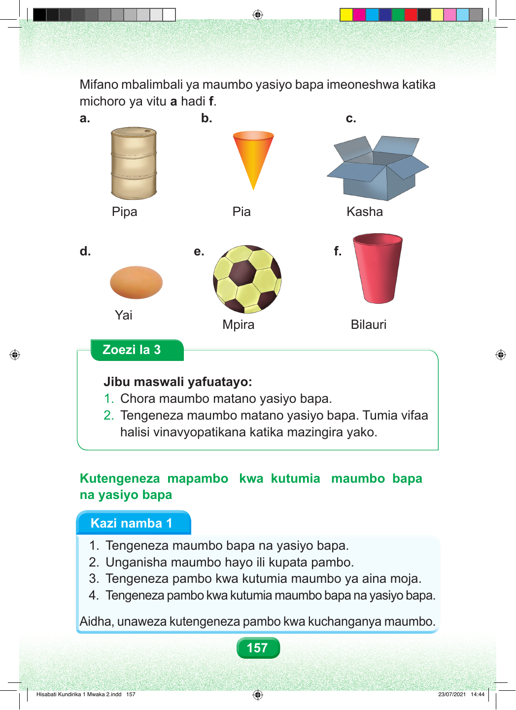

Mifano mbalimbali ya maumbo yasiyo bapa imeoneshwa katika michoro ya vitu a hadi f. a. b. c. Pipa Pia Kasha d. e. f. Yai Mpira Bilauri Zoezi la 3 Jibu maswali yafuatayo: 1. Chora maumbo matano yasiyo bapa. 2. Tengeneza maumbo matano yasiyo bapa. Tumia vifaa halisi vinavyopatikana katika mazingira yako. Kutengeneza mapambo kwa kutumia maumbo bapa na yasiyo bapa Kazi namba 1 1. Tengeneza maumbo bapa na yasiyo bapa. 2. Unganisha maumbo hayo ili kupata pambo. 3. Tengeneza pambo kwa kutumia maumbo ya aina moja. 4. Tengeneza pambo kwa kutumia maumbo bapa na yasiyo bapa. Aidha, unaweza kutengeneza pambo kwa kuchanganya maumbo. 157 Hisabati Kundirika 1 Mwaka 2.indd 157 23/07/2021 14:44